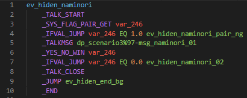

After so many years of relatively stable Pokémon games, Game Freak released, in November of 2021, the (arguably) glitchiest game they ever have. The ease with which the glitches are performed, their incredibly versatile uses, and the speed at which they were found made it an incredibly fun time for glitch hunters, speedrunners, and even casual players. Unfortunately, most of these have been patched either fully or in part and therefore can only be performed in legacy versions of the games that are close to impossible to access.
This document aims to explain and, well, document all the known glitches, their various applications, and which versions they can be done in. The goal is for anyone reading this to be able to perform the glitches easily and to also give a deeper understanding of what makes them work.
It would be impossible to talk about the glitches of these games without mentioning the important and fascinating Menu Storage. Originally found through Strength Storage (more on that one later), this is both the easiest to perform and most powerful glitch in the games.
Menu Storage consists of having the pause menu open but being considered out of the menu by the game. This has many great uses but can also cause easy crashes and softlocks if not understood correctly.
According to rlaphoenix’s GitHub Gist, the method was discovered by matereyoyo on Twitter and simplified by Pefau.
1.1.1 only.
The main difference with this special form of Menu Storage is the inability to interact with actors and warps. It was named “Strength Storage” because of it first being found through the use of Strength. However, there are a multitude of other ways to create a very similar, if not identical, storage.
According to rlaphoenix’s GitHub Gist, the method was discovered by JockeMS.
1.1.1 – 1.1.2
This glitch stores the Fly menu that is opened directly from the Pokétch, and therefore cannot be reverted into a regular Pause menu. However, there is a way to transform it that is still relatively simple.
The Door method is still doable in 1.1.3 but requires a very specific setup to be done before updating to that version. There is also a different, more difficult method that is doable in 1.1.3 that requires Strength.
YiffiesNES posted their Twitter clip of this storage being transformed into regular Menu Storage through the Glitchy Pokétch method.
According to rlaphoenix’s GitHub Gist, the Door method was discovered by JockeMS.
The Restaurant setup was created by SaltContainer and double-negative.
The 1.1.3 Strength method was found by SaltContainer.
This can be transformed into a regular Menu Storage like so:
Door method: 1.0.0 – 1.1.3 (1.1.3 requires Restaurant setup)
Glitchy Pokétch method: 1.0.0 – 1.1.2
1.1.3 Strength method: 1.1.3 (Untested on previous versions, but redundant)
Using a well-timed egg hatch, you can skip 1-tile deep triggers (which is most of them).
Discovered by FrostedGeulleisia.
1.0.0 – 1.1.2
The Pokétch menu has some weird mechanics and allows for some even weirder glitches. You can confuse it into thinking it’s open when it’s not. This causes its cursor to move around with the player and allows clicks as well. The glitch goes away after going through a script and/or battle.
First discovered by YiffiesNES for Fly Storage, it was later researched by Jaddo and refined by double-negative.
From greyed out HMs and from anywhere: 1.0.0
From usable HMs, in front of their object: 1.1.1 – 1.1.2
Menu Storage has so many applications. This one is important enough to warrant being put in the “Main Glitches” section. There are many ways to induce a hover state, the main one being from a ledge and aptly named Ledgitate.
Interrupting a ledge jump keeps you in a state where your elevation doesn’t, or barely, changes.
The first known Hover State found was Train State, by てあ.
Menu Storage method: 1.0.0 – 1.1.2
Key Item menu Storage method: 1.0.0 – 1.1.2
Glitchy Pokétch method: 1.1.1 – 1.1.2
Using a couple different methods, you can make Bibarel surf onto land. Collision, movement, and elevation work differently and sometimes weirdly in this state.
According to rlaphoenix’s GitHub Gist, the method was discovered by Shrimp.
Trainer method: 1.0.0 – 1.1.1
Menu Storage method: 1.0.0 – 1.1.3
Cannot move after obtaining in 1.0.0.
A very simple way to get into the void, which can be done in only a few specific spots.
It is unknown who first found this.
1.0.0 – 1.1.3 (Harder in 1.1.3)
Using a regular Menu Storage, you can skip any trainer in the game. Well, not any, but most of them. The only exceptions are the trainers in Gardenia’s gym. No Gym Leaders can be skipped in 1.0.0.
According to rlaphoenix’s GitHub Gist, the method was discovered by Dymnix#4367.
Any version with Menu Storage.
Gym Leaders in 1.0.0 cannot be skipped with this glitch.
Menu Storage can be transformed into a multitude of different storages, and these two are quite similar. Closing a menu while in a movement script allows you to store that script for later use.
It is unknown who first found this.
Any version with Menu Storage.
Menu Storage can be transformed into a multitude of different storages, and these two are quite similar. Closing a menu while in a movement script allows you to store that script for later use.
According to rlaphoenix’s GitHub Gist, the method was discovered by werster.
Any version with Menu Storage.
This application requires multiple Key Item Menu Storages and allows for some interesting control over if the game is frozen or not. The top Key Item menu freezes the game in a Glitched State, and the bottom one restores it after some triggers/trainers have been passed through.
It is unknown who first found this.
1.1.1 only. Requires Menu Sandwich.
Walk on Water refers to being on water without riding Bibarel and being considered “surfing”. There are many ways to achieve this.
One method is to cancel the animation of entering water to surf. This also induces a Hover State. This method is the one described below. This allows you to walk on water with no issue. Do note that you can directly walk off the water onto land, so be careful not to get too close to the borders of the water.
It is unknown who first found this.
Any version with Menu Storage.
The reason Menu Storage works is because closing the menu clears all the game’s flags that consider you “in the menu”. Some other mechanics also restore movement, but sometimes at the cost of interaction. In the case of Strength Storage, you open the menu just as the Strength cutscene is starting. After that cutscene is done, it restores movement, but doesn’t clear menu flags therefore not restoring interactions.
There are also some even more powerful restrictions than the menu can clear that are used in a few places in specific scripts. Those restrictions are usually set by the common script “ev_block_doc”, shown here:
This common script sets system flags 907 and 781, and they are reset by the corresponding common script “ev_block_doc_end”. Flag 907 is also reset in several other scripts but flag 781 is only reset in “ev_block_doc_end”.
An example of where these restrictions are used is the Dawn/Lucas cutscene when you first enter Sandgem Town, shown here:
The Explorer’s Kit and Pokéradar also both restrict in the same way when used. You can regain movement by using the Pokéradar over the Explorer’s Kit, but the choice menu doesn’t do anything afterwards as the script was overriden.
With how easy it is to create extra menus in 1.1.1, you can stack them in what is called a “Menu “Sandwich”. You may see in some written speedrun routes for this game the terms “Bread” and “Ham”. These refer to a Pause menu and a Key Item menu respectively. Stacking menus in a sandwich is what allows most applications to work.
To understand why Script Storage works, let’s analyze the GWS NPC’s script:
The important lines are 4-6. Have you ever wondered why you need to wait a second before closing the menu to store the script? It’s because of those lines. Here is the movement script “anm_c01_gtc_stopper_amendment”, which is how the player is moved:
And here is “anm_c01_gtc_stopper_01”, which is how the GWS NPC is moved:
Let’s analyze. For the player, the first command is “AC_WAIT 45.0” which waits for 45 frames. Then, “AC_DIR_L 8.0” which turns the player to the left over 8 frames.
For the NPC, firstly “AC_MARK_GYOE” makes an exclamation bubble pop up. The length of it seems to be affected by player movement, but if the player stays still, it lasts 60 frames. Next the NPC is turned down over 4 frames by “AC_DIR_D 4.0”. Then, “AC_HERO_MATCH_Z 8.0” makes her move on the Z axis (North-South) to reach the same Z coordinate as the player. She takes 8 frames per step. Lastly, “AC_DIR_R 8.0” makes her turn to the right over 8 frames.
Overall, the player movement is 53 frames, and the NPC’s is at minimum 80 frames. This gives you 27+ frames to close the menu before the script resumes. “_OBJ_ANIME_WAIT” waits for all movement before it to be done. Since the player’s is already done, it only has to wait for the NPC’s, which gives you time to close the menu to regain movement. It then continues “as intended”. If you close it too soon, however, the player’s movement script is never flagged as done and the script hangs at “_OBJ_ANIME_WAIT”.
It is important to note that closing the menu does not stop a running script. Most of the time when it appears that way, it has something to do with the textbox in the root pause menu. Closing the pause menu also closes the currently open textbox. If it’s not the last textbox the script hangs. However, if it’s the last, it continues “as intended”. This behavior with the textboxes is why doing a Script Storage during a movement script is the easiest way to do it.
Now, let’s look at Door Storage. It works almost the exact same since doors partly are scripts. Here’s the script for most doors:
For Door Storage to work, you must close the menu while a movement is applied to the player. Lines 3 and 12 are where that happens. For the same reason as the Script Storage above, closing the menu here will cause the script to hang on “_OBJ_ANIME_WAIT”, which is what we want.
To resume the warp, we can talk to a water tile, which is always doable even when considered in a cutscene. Let’s look at the surf script:
In every branch of the script, “ev_hiden_end_bg” is jumped to, which is just “_TALK_END” and “_END”, which restores our movement. Seemingly, starting the surf script overwrites the currently stored script. In the case of Door Storage, the actual warping part is done after a script is done, so finishing the surf script in any way resumes that. If you said “Yes” to surfing, then the player will be surfing while warping, which is a method of Surf on Land.
Storing a Menu Storage for later use is possible and the main way to get two menus in 1.1.2 and 1.1.3. It is also the only known way to move with a menu in 1.1.3.
There are multiple ways to execute this. All of them require a “scene refresh”. Here is a list of some of these so-called “scene refreshes”:
To store a Menu Storage:
This does not work if what you are trying to store is a regular menu. This will cause a black screen and you will not be able to move (for unknown reasons). You have to store a Menu Storage.
The Ball Capsule Preview feature is an incredibly powerful tool that helps with most glitches. It can be accessed after the Team Galactic double battle in Jubilife (just after Gym 1), both from the pause menu and from the PC.
It is powerful in a lot of ways:
Previewing a Ball Capsule refreshes the scene, yes, but it also completely reloads it. Upon closing the preview, the player’s positioning is changed. They are placed in the center of the tile they were on, and their height is reset to the height of that tile (usually). This is especially useful when navigating terrain with either a Hover State or Surf on Land.
The preview takes place in a battle scene and is therefore quite useful if used from a stored menu. If you preview while in a battle and then close the preview, you will be returned the overworld since it “closes” the battle scene. The battle will not be flagged as won, but this only matters for Gardenia’s gym trainers (and Gym Leaders in 1.0.0). After a trainer battle, the script simply continues and most of the time there are no checks to see if you’ve won the battle.
Although the most valuable glitch in the original gen 4 games, the void in BDSP is a bit different and not as powerful. These are observations that have been made about the void in this game:
Surprisingly one of the most stable versions of the game. Although unfinished (Battle Tower, music, a lot of small things), they managed to not make it too glitchy for a first release.
For the purposes of this document, every mention of 1.1.1 should also apply to 1.1.0, but most things have not been tested. Since 1.1.0 was released a week before 1.1.1 and (mostly) only accessible to reviewers, it is very hard to find and has not been researched much.
Now, 1.1.1 is THE most broken patch of the game. This is for one reason only: Menu Storage directly from the party menu exists. There are also a few other glitches here and there that were patched in the next version, but the big one was Menu Storage.
After a bit of fun with glitches, it all came crashing down within a week or two. Nintendo and TPC did not want there to be any fun whatsoever in these games. However, they didn’t patch that much.
That’s it. The rest is all still in but did not last long.
Three days before Christmas, ILCA took the time to patch everything (that they knew of).
Union room capacity was upgraded. ILCA also removed the latest Menu Storage method, which combined Pokétch, Fly, Strength, and hope. This version wasn’t tested that much, interest was mostly gone by then.
Finally, after a long time, the GWS was added. This version also wasn’t tested super thoroughly as most of the interest had died down by this point.
Thank you to all the glitch hunters in the PSR Switch Discord that helped research all of these.
Thank you to all the speedrunners that just kept pushing the any% 1.1.1 time lower and lower every day.
Thank you to all the Japanese runners and glitch hunters that also researched on their side.
Thank you to rlaphoenix for keeping a list of most glitches that were found up to date for the first few weeks of the game being out.